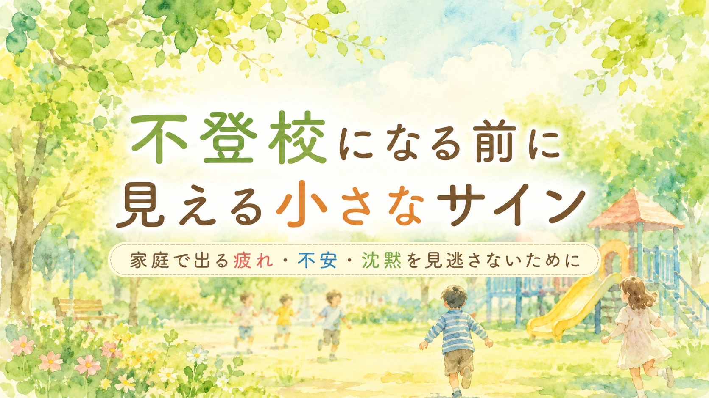

この記事は、不登校や登校しぶりの小さなサインについて、家庭で子どもを責めずに状況を整理し、学校や関係機関と相談しやすくするためのコラムです。診断や治療、法的判断の代わりではありません。
子どもが学校に行かなくなる前には、はっきりした「事件」ではなく、 小さな変化が少しずつ現れることがあります。 帰宅後に荒れる。学校の話をしなくなる。日曜の夕方から不安定になる。 宿題の前で固まる。以前好きだったことを楽しめなくなる。 本人は「大丈夫」と言っているのに、家庭ではどこか疲れて見える。 この記事では、不登校を脅しの言葉にするのではなく、 子どもの疲れや不安に早く気づき、家庭と学校で支援を考えるための視点を整理します。
1. 不登校は、突然始まるとは限らない
不登校というと、ある日突然「学校に行かない」と言い出す姿を想像しがちです。 しかし実際には、その前から小さな変化が積み重なっていることがあります。
学校には行っている。遅刻も欠席もまだ多くない。 先生から大きな連絡が来ているわけでもない。 本人も「別に大丈夫」と言う。 それでも、家庭では以前と違う姿が見えている。 その違和感は、軽く扱わないほうがよい場合があります。
ただし、小さなサインがあるからといって、必ず不登校になるわけではありません。 大切なのは、子どもを不安視しすぎることではなく、 今、何に疲れているのか、どこで無理をしているのかを早めに見ることです。
「学校に行けているから大丈夫」と決めつけず、 「学校に行けているけれど、かなり無理をしていないか」と見る。 その視点が、早い支援につながります。
2. 家庭で見えやすい小さなサイン
学校で見える姿と、家庭で見える姿は違うことがあります。 学校では頑張っている子ほど、家庭で疲れや不安が出ることがあります。
家庭で見えやすいサイン
- 帰宅後に怒りっぽくなる
- 学校の話をしなくなる
- 宿題の前で固まる、泣く、怒る
- 日曜の夕方から表情が暗くなる
- 朝の準備に時間がかかるようになる
- 腹痛、頭痛、吐き気、だるさを訴える
- 以前好きだった遊びや趣味を楽しめなくなる
- 寝つきが悪くなる、夜中に起きる
- 食欲が落ちる、または過食気味になる
- 「どうせ無理」「自分だけできない」と言う
- きょうだいに強く当たる
- 保護者の質問に「別に」「普通」とだけ答える
これらは、反抗期や気分の問題として見えることもあります。 もちろん、すべてを学校の問題と決めつける必要はありません。 ただ、変化が続くときは、「何かを抱えているサインかもしれない」と見てよいのです。
3. 「大丈夫」と沈黙の間を見る
子どもが「大丈夫」と言っていると、保護者は安心したい気持ちになります。 しかし、「大丈夫」は本当に大丈夫という意味とは限りません。
言葉にすると泣いてしまいそうだから「大丈夫」と言う。 親に心配をかけたくなくて「大丈夫」と言う。 何がつらいのか自分でもわからなくて「大丈夫」と言う。 話しても変わらないと思って「大丈夫」と言う。 そのような場合もあります。
だからといって、無理に聞き出す必要はありません。 「何があったの」と強く迫ると、子どもはさらに黙ってしまうことがあります。 まずは、答えやすい形にします。
聞き方の例
「学校どうだった？」ではなく、
「今日、疲れたのは授業、休み時間、給食、帰り道のどれに近い？」
「話したくなければ、今は話さなくていいよ。あとで一つだけ教えてくれたらいいよ」
「大丈夫って言っているけど、少し疲れて見える。何か手伝えることはある？」
沈黙は、何も考えていないという意味ではありません。 言葉にする力が残っていない、あるいは言葉にする準備ができていないこともあります。 保護者は、沈黙を責めるのではなく、話せる入口を小さく作ることができます。
4. 帰宅後に出る疲れ
不登校の前段階で見落とされやすいのが、帰宅後の姿です。 学校では何とか持ちこたえていても、家に帰った途端に糸が切れるように崩れることがあります。
帰宅後に毎日怒る、泣く、何もできない、宿題で大きく荒れる。 これは、家庭のしつけの問題とは限りません。 学校で大量のエネルギーを使い切っているサインかもしれません。
| 帰宅後の姿 | 背景にあるかもしれないこと | 見るポイント |
|---|---|---|
| すぐ怒る | 学校で我慢し続け、感情の余力が残っていない | 怒りの前に疲れがないかを見る |
| 宿題で固まる | 学習のつまずき、失敗への不安、処理疲れ | 量、難易度、開始時間を調整する |
| 何も話さない | 言葉にする力が残っていない | すぐ聞かず、休んでから話す |
| きょうだいに当たる | 外で出せなかった緊張が家庭で出ている | 叱るだけでなく、先にクールダウンを入れる |
| 寝込む | 刺激、対人関係、学習、行事の疲労 | 曜日や活動との関係を見る |
帰宅後の崩れは、学校での頑張りの裏側かもしれません。 学校での様子だけでなく、帰宅後の姿も支援を考える材料になります。
5. 日曜夕方・月曜朝の変化
不登校の前段階では、日曜の夕方や月曜の朝にサインが出ることがあります。 休日の終わりが近づくにつれて表情が暗くなる。 明日の時間割を見て不機嫌になる。 寝つきが悪くなる。 月曜の朝だけ腹痛や頭痛が出る。 こうした変化です。
これは、単に休み明けが嫌だというだけではなく、 学校生活に向かうための心理的負荷が大きくなっているサインかもしれません。
日曜夕方に見たいこと
- 明日の話題を避けるか
- 時間割や持ち物で不安定になるか
- 寝る前に学校のことを何度も確認するか
- 特定の教科や活動の前だけ崩れるか
- 「明日休みたい」と言うか
- 体調不良が出るか
日曜夕方に不安が出る子には、説得よりも見通しが役立つことがあります。 月曜の朝にすべて決めるのではなく、日曜のうちに持ち物、登校後の最初の行動、 困ったときに頼る大人を確認しておくと、少し楽になる場合があります。
6. 学校で何が負荷になっているか
不登校につながる負荷は、一つとは限りません。 勉強だけでなく、友達関係、先生との関係、給食、体育、音、におい、行事、休み時間、 登下校など、さまざまな場面が重なっていることがあります。
| 負荷になりやすい場面 | 家庭で見えやすいサイン | 相談の方向 |
|---|---|---|
| 学習 | 宿題で固まる、特定教科の前日に荒れる | 課題量、説明方法、板書、ICT、宿題調整 |
| 友達関係 | 休み時間の話を避ける、登下校を嫌がる | 誰と、どの場面で不安があるかを共有 |
| 給食 | 給食の日に腹痛、食事の話題を避ける | 量、時間、におい、食感、無理な完食指導の確認 |
| 感覚刺激 | 帰宅後にぐったりする、音や人混みを嫌がる | 座席、休憩場所、イヤーマフ、刺激の少ない環境 |
| 行事 | 予定変更や練習期間に不安定になる | 見通し、役割、参加方法、休憩場所の確認 |
| 先生との関係 | 注意された話題を避ける、先生名で表情が変わる | 注意の受け方、個別確認、安心できる大人の設定 |
「学校が嫌」という言葉だけでは、大きすぎます。 どの時間、どの場所、どの相手、どの活動が重いのかを分けることで、 支援の入口が見えやすくなります。
7. 家庭でできる初期対応
小さなサインに気づいたとき、家庭でまずできることは、 原因を一気に突き止めることではありません。 子どもが少し安心して、状態を出せる余白を作ることです。
一つ目：帰宅後すぐに問い詰めない
学校から帰った直後は、話す力が残っていないことがあります。 「どうだった？」と聞く前に、水を飲む、着替える、静かに過ごすなど、 回復の時間を入れます。
二つ目：学校の話をしない時間も作る
毎日学校の話ばかりになると、家庭まで学校の延長になります。 学校のことを聞く時間と、聞かない時間を分けることも大切です。
三つ目：小さな変化を記録する
「最近おかしい」だけでは、学校に伝わりにくいことがあります。 何曜日に、どの場面で、どんな様子が出たかを短く記録すると、 相談が具体的になります。
四つ目：休ませるか行かせるかだけで考えない
遅刻、短時間登校、保健室、別室、オンラインでの確認、宿題量の調整など、 学校とのつながり方には段階があります。 二択にしすぎないことが、親子の圧力を下げます。
8. 学校に相談するときの伝え方
まだ欠席が増えていない段階では、学校に相談してよいのか迷う保護者もいます。 しかし、不登校になる前の小さなサインこそ、早めに共有したほうが支援につながりやすくなります。
相談の切り出し方
「まだ欠席が増えているわけではありませんが、 家庭で疲れや不安のサインが続いています。 学校での様子と家庭での様子を合わせて、早めに負担になっている場面を整理したいです。」
帰宅後の崩れを伝えるとき
「学校では頑張れているように見えるかもしれませんが、 帰宅後に毎日強い疲れが出ています。 授業、休み時間、給食、友達関係などで、緊張している場面がないか一緒に見ていただけますか。」
沈黙や学校の話を避ける様子を伝えるとき
「最近、学校の話をほとんどしなくなりました。 本人は『大丈夫』と言いますが、家庭では表情や睡眠に変化があります。 学校で気になる様子がないか、少し見ていただけると助かります。」
校内の相談先につなげたいとき
「担任の先生だけで抱えていただくというより、 養護教諭、特別支援教育コーディネーター、スクールカウンセラーなどにも相談しながら、 本人が安心できる方法を考えたいです。」
学校に伝えるときは、「何とかしてください」だけではなく、 家庭で見えている具体的な変化を共有します。 学校での姿と家庭での姿をつなぐことで、支援の地図が作りやすくなります。
9. 外部相談を考えたいとき
小さなサインが続いているとき、家庭と学校だけで抱え込まないことが大切です。 特に、次のような状態がある場合は、早めに相談先を増やします。
相談を考えたい状態
- 腹痛、頭痛、吐き気、だるさなどが続く
- 眠れない、夜中に起きる、朝起きられない状態が続く
- 食欲が大きく落ちる、または過食が続く
- 「消えたい」「いなくなりたい」などの言葉が出る
- 自分を強く責める言葉が増える
- 学校の話題になると強いパニックや怒りが出る
- 家庭内で暴力や自傷につながる行動がある
- 保護者が疲れ切り、安全に対応できなくなっている
相談先には、担任、養護教諭、スクールカウンセラー、スクールソーシャルワーカー、 教育相談所、教育支援センター、小児科、児童精神科、精神保健福祉センター、 自治体の子ども相談窓口などがあります。
「まだ不登校ではないから相談してはいけない」ということはありません。 早めに相談することは、問題を大きくすることではなく、 子どもが孤立しないための手立てです。
10. 家庭で整理しておきたいメモ
家庭で見える小さなサインは、記録しておくと学校や相談機関に伝えやすくなります。 長い日記でなくても構いません。 曜日、場面、様子、回復に役立ったことを短く残します。
このメモの目的は、子どもを監視することではありません。 「何が起きているのか」を、家庭と学校で共有できる形にすることです。
11. 避けたい言葉と、置き換えたい言葉
小さなサインが見えたとき、保護者も不安になります。 その不安から、強い言葉が出てしまうことがあります。 ただ、子どもを追い込む言葉は、困りごとを隠す方向に働くことがあります。
| 避けたい言葉 | 置き換えたい言葉 |
|---|---|
| 「そんなことで休まないよ」 | 「何が一番しんどいか、一つずつ見てみよう」 |
| 「みんな頑張っているよ」 | 「あなたにとって、どこが一番重いのか知りたい」 |
| 「大丈夫なんでしょ」 | 「大丈夫と言っているけど、疲れて見える。少し休んでから話そう」 |
| 「理由を言えないなら行きなさい」 | 「言葉にしにくければ、選択肢から選んでいいよ」 |
| 「このままだと不登校になるよ」 | 「今のうちに、少し楽になる方法を一緒に探そう」 |
子どもは、責められると本音を隠すことがあります。 反対に、「話しても怒られない」と感じると、少しずつ困りごとを出せるようになることがあります。
まとめ：小さなサインは、責める材料ではなく支援の入口
不登校になる前には、家庭で小さな変化が見えることがあります。 帰宅後の荒れ、沈黙、宿題前の固まり、日曜夕方の不安、体調不良、睡眠の乱れ。 それらは、怠けや反抗ではなく、疲れや不安のサインかもしれません。
もちろん、サインがあるからといって、必ず不登校になるわけではありません。 しかし、家庭で見える違和感を早めに言葉にすることで、 学校や相談機関と支援を考えやすくなります。
大切なのは、「学校に行かせるか、休ませるか」の二択だけで考えないことです。 何が負荷になっているのか。 どの時間、どの場面、どの相手、どの活動でしんどさが出ているのか。 どの条件なら少し楽になるのか。 そこを家庭と学校で共有していきます。
小さなサインは、子どもを責める材料ではありません。 子どもが孤立する前に、家庭と学校と支援者が気づくための入口です。
不登校や登校しぶりの小さなサインを、家庭だけで抱え込まないために。 まなびの森教育研究所では、家庭で見えている変化を整理し、学校との相談で伝えたいことを一緒に言葉にしていきます。
保護者向け相談ページを見る